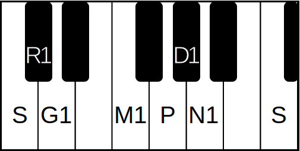

Popular Compositions
Sarōjadala Nētri and Dēvī Mīnānētri by Syama Sastri in Telugu
Chalamela(Ata tala varnam) and Devi Jagath Janani by Swathi Thirunal maharaja
Pogadirēlo Ranga by Purandara Dasa
The Melakarta Chart is a visual representation of all 72 Melakarta Ragas and their derivations. The chart is separated into a hierarchical tree model with representations for each swara family. The center of the chart represents the origin of all Melakarta ragas. The second level of circles represents the two Madhyama (M) swaras and their respective halves of the Melakarta structure. The third level of circles represents the 12 Chakras of Carnatic music. Each Chakra represents a particular combination of Rishabha and Gandhara swaras in its particular half of the chart. Clicking on the name or circle for any of the 72 ragas will bring up a popup which contains information about that particular raga. The left side of the panel includes an image of the western scale equivalent of the particular raga. The right side contains a few popular compositions in the selected scale. On the top of the panel you can listen to a short ascending (Arohanam) and descending (Avarohanam) audio representation of the scale.
The "Search by Swara" feature is a tool to find a raga by the notes in its particular scale. There are a total of 7 different swaras in the Carnatic system. You can choose the pitch for 5 of these 7 notes (R,G,M,D,N). There are no variations of both Shadja (S) and Panchama (P) in a single octave therefore they are not alterable in the swara selection. Note that Rishabha (R) should always be a lower note than Gandhara (G) and that Dhaivata (D) should always be a lower note than Nishada (N). For Example, if you select G2, then you may only select R1 or R2. Once you have selected all five swaras from the dropdown, you may click the "Search By Swara" button to search the Melakarta chart for the corresponding raga. The raga will be highlighted in red.
The "Search By Name" feature is a simple tool that allows you to find a raga on the chart if you already know its name. Searched ragas will be highlted red on the chart, indicating their location.